CityLoop Quest Mons - La Chevauchée de Saint Georges
🏛️ Musées à visiter à Mons
Musées d'art et patrimoine
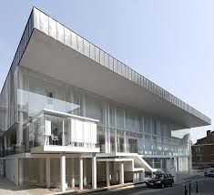
Musée des Beaux-Arts (BAM) Adresse : Rue Neuve 8, 7000 Mons Le BAM (Beaux-Arts Mons) est un musée d'art moderne et contemporain proposant des expositions temporaires prestigieuses dans un cadre architectural contemporain.
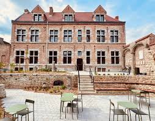
Musée des Collections (CAP) Adresse : Rue Neuve 8, 7000 Mons Le Musée des Collections (CAP) de Mons présente les riches collections permanentes de la ville, mêlant arts anciens, modernes et contemporains dans un parcours thématique.
Maison Losseau Adresse : Rue de Nimy 37, 7000 Mons La Maison Losseau à Mons est un joyau de l'Art nouveau, abritant un centre littéraire et une maison-musée dédiée à l'œuvre du bibliophile Léon Losseau.
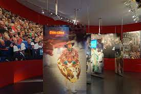
Musée du Doudou Adresse : Jardin du Mayeur, 7000 Mons Le Musée du Doudou à Mons est consacré à la Ducasse rituelle, mettant en valeur son histoire, ses traditions et son inscription au patrimoine immatériel de l'UNESCO.
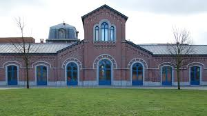
Anciens abattoirs Adresse : Rue de la Trouille 17, 7000 Mons Le musée des Anciens Abattoirs de Mons est un espace d'art contemporain installé dans un remarquable site industriel du XIXe siècle rénové.
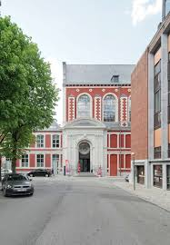
Artothèque Adresse : Rue Claude de Bettignies 1, 7000 Mons L'Artothèque de Mons est un centre de conservation et de recherche dédié aux collections muséales de la ville, situé dans une ancienne chapelle rénovée.
Musées d'histoire et mémoire
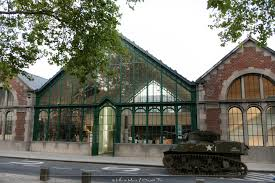
Mons Memorial Museum (MMM) Adresse : Boulevard Dolez 51, 7000 Mons Le Mons Memorial Museum retrace l'histoire militaire de Mons à travers les conflits du XXe siècle, en mettant l'accent sur les expériences humaines des civils et des soldats.
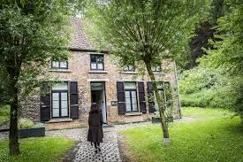
Maison Van Gogh Adresse : Rue du Pavillon 3, 7033 Cuesmes (Voiture nécessaire) La Maison Van Gogh à Mons évoque le séjour du peintre à Cuesmes et présente son évolution artistique à travers une scénographie immersive.
Mundaneum Adresse : Rue de Nimy 76, 7000 Mons Archives de la connaissance mondiale, musée et centre d'exposition autour des utopies documentaires.
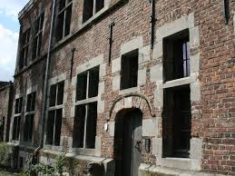
Maison Jean Lescart Adresse : Rue Neuve 8, 7000 Mons La Maison Jean Lescarts à Mons est un musée du folklore local retraçant la vie montoise à travers objets, traditions et scènes reconstituées. Hélas fermé définitivement.
Musées sciences et techniques
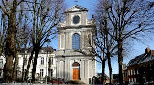
MUMONS Adresse : Place du Parc 24, 7000 Mons Le Musée MUMONS est le musée universitaire de l'UMONS, explorant les liens entre science, art et société à travers des expositions originales.
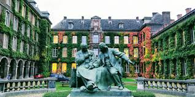
SciTechLab Adresse : Rue de Houdain 9, 7000 Mons Le SciTechLab est un espace muséal interactif de l'UMONS dédié à la découverte des sciences et des technologies de manière ludique et immersive.
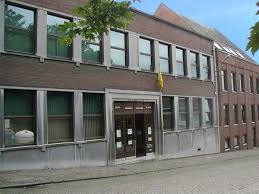
Muséum régional des Sciences naturelles de Mons Adresse : Rue des Gailliers 7, 7000 Mons Le Musée régional des Sciences naturelles de Mons présente une riche collection de spécimens zoologiques, botaniques et géologiques pour explorer la biodiversité.
Musées patrimoine industriel et technique
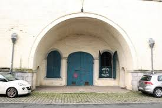
Musée de la Route de Mons Adresse : Rue des Canonniers (Place Nervienne), Casemates 3, 4 et 5, 7000 Mons Le Musée de la Route de Mons retrace l'histoire des infrastructures routières et des métiers liés à la voirie en Wallonie. Hélas fermé définitevement.